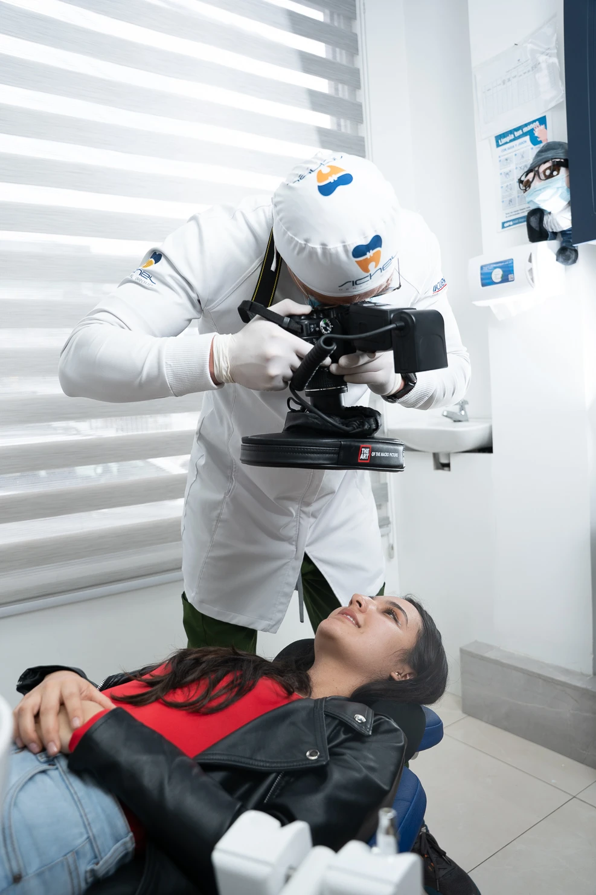

01 / CUIDADO DENTAL
Valoración y diagnóstico
El primer paso es conocerte. Evaluamos tu salud bucal y conversamos sobre las opciones de tratamiento.
Consultar tratamiento ↗Desde tu primera valoración hasta el seguimiento: descubre cómo podemos acompañarte.
El primer paso es conocerte. Evaluamos tu salud bucal y conversamos sobre las opciones de tratamiento.
Consultar tratamiento ↗
Una alternativa discreta de ortodoncia. Descubre si es adecuada para ti en una valoración personalizada.
Consultar tratamiento ↗
Acompañamos tu tratamiento de ortodoncia con planificación y seguimiento en cada etapa.
Consultar tratamiento ↗
Cuidado profesional para complementar tu higiene diaria y mantener tu salud bucal.
Consultar tratamiento ↗
Restauraciones para recuperar la forma y función de las piezas que lo necesitan.
Consultar tratamiento ↗Evalúa con nuestro equipo las opciones para mejorar el tono de tu sonrisa.
Consultar tratamiento ↗Placas personalizadas como parte del manejo del bruxismo, según tu diagnóstico.
Consultar tratamiento ↗Valoración y planificación de alternativas para reemplazar piezas dentales ausentes.
Consultar tratamiento ↗Atención pediátrica · Odontología estética · Odontología bajo sedación · Servicios de emergencia
La indicación de cada tratamiento y su disponibilidad se confirman en consulta. Para emergencias, comunícate antes de acudir.Escríbenos y coordinamos tu visita.
Revisamos tu caso y resolvemos tus dudas.
Conoce las opciones y el plan recomendado para ti.
Cuéntanos qué necesitas. Estamos para escucharte.